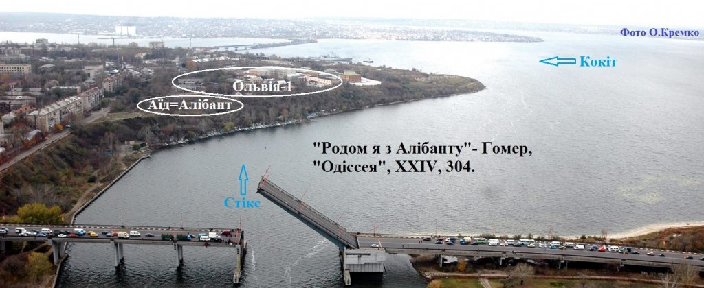

Днями з археологами Кирилом Горбенко та Олександром Смирновим ми прочесали мис Табірного поля з метою пошуку храму Деметри, але нічого поки не знайшли. Справа в тому, що у своїй книзі «Місто Святого Миколая» я припустив, що храм Деметри знаходився на місці Обсерваторії. Перечитавши уважно давньогрецький текст 4-ї книзі «Історії» Геродота, виявив, що він його бачив у середині V в . до н.е. на мисі берега Гипаніса (П. Бугу) поряд з Борисфенітськім селищем. З моїх досліджень (див. мою книгу «Гомер. Іманентна біографія», «Атол», Миколаїв, 2001) перебування тут Гомера слідує, що це була 1-ша Ольвія (її потрібно шукати в районі між Яхт- клубом і Табірним полем). Вона була заснована прапрадідом Гомера, Таргітаєм, в середині VIII в. до н.е. Саме в Ольвії-1 й народився Гомер 14 вересня 657 р. до н.е. Детальніше про це, читайте статтю «Гомер – міф чи реальність?» тут на сайті. Друга Ольвія (біля Парутина) була заснована його братом -близнюком, Ахіллом, і сестрою по батькові, Клеопатрою, 20 липня 624 р. до н.е. Гомер в цей час 7 років перебував у Єгипті, де збирав відомості про Атлантиду.
{kind=link}
Останні 10 років зайнятий тим, що узагальнюю, зібрану за 31 рік, доказову базу , котру сподіваюся видати у вигляді 3-х томної наукової монографії під назвою «Гомер. Автобіографія». Різниця у назві з першою книгою викликана тим, що в 2008 р. мені вдалося знайти приховані вірші у відкритих текстах Гомера. Саме ця обставина і змусило назвати цю книгу автобіографією. Цю можливість передбачав О.С. Пушкін, коли Микола Гнєдич закінчив переклад «Іліади», він йому написав в 1832 р.: «З Гомером довго ти бесідував один, / Тебе ми здавна зачекались,..». Так що, доведеться почекати, коли закінчаться мої натуральні бесіди з Гомером і буде видана монографія, в ній будуть приведені всі докази щодо сказаного тут. А поки що прошу прийняти все це на віру, і зрозуміти, що це все-таки газетна стаття, де не можна привести всі докази. Про те, що є науково, а що не наукове, знаю не з чуток,- 12 років живу на наукову пенсію. А мовчати про це не маю морального права – занадто швидко знищуються артефакти. На цьому сайті розміщені статті : «Гомер – міф чи реальність?» (Опублікована в московському журналі ПОетів № 1 в ц.р. ), «Сфінкс і скіфи», в останній роз’яснюється чому за життя Гомера не було видано жодної реальної його біографії. До слова сказати, дослідження наших археологів Дикого Саду увійдуть до доказової бази описа Гомером Алібанту в моїй монографії. Втім, самі археологи скептично дивляться на все це, бо працюють виключно з артефактами, а не з текстами. Перша реакція будь-якого вченого (сам такий): цього не може бути?! Друга нормальна реакція: в цьому щось є і потрібно з цим розібратися. Що стосується «вчених сусідів», по А.П. Чехову, то в них на все нове є одна відповідь: «цього не може бути, тому, що цього не може бути ніколи»…
У «Одіссеї » (XXIV, 304 ) Гомер писав: «Я народився в Алібанті», тут Алібант перекладається з давньогрецької, як «Філа покійних». Таким чином, за часів Гомера (VII-VI ст. до н.е.) це місто було вже мертвим – це підтверджується радіовуглецевим датуванням Дикого Саду (XIII-X ст. до н.е.). Не потрібно розуміти цю фразу буквально, бо насправді Гомер народився в 1-й Ольвії, розташованій поблизу Алібанту. Це всього лише вираз гордості й значущості цього міста мертвих для Гомера. Алібант користувався колосальною повагою у кіммерійців і царських скіфів тому, що це було місто їхніх предків атлантів, які врятувалися за 4 дні до катастрофи. Гомер пише, що жерці передбачили дату загибелі Атлантиди й 10 сімей на 10 кораблях перебралися спочатку на Кінбурнську косу, а пізніше вже заснували тут Алібант. Саме через Алібант Гомер розмістив тут царство мертвих, Аїд, вказавши, що він знаходиться там, де «народ і місто кіммерійські» («Одіссея», XI, 14), з асфаделевим лугом на Стрілці (Єлисейські поля блаженних), а на Кінбурнській косі він розмістив Тартар, тобто Пекло. Гомер і його предки вважали себе нащадками атлантів, які були сучасниками крито-мінойської культури і саме тому не визнавали себе варварами! Зауважу, що першоджерелом відомостей про Атлантиду є весь рід Гомера, в якому з покоління в покоління передавалися відомості про неї, а не Платон і його дід Солон. Оскільки греки вважали їх варварами, то вони не могли опублікувати відомості про те, що кіммерійська Атлантида володіла Грецією. Але, син Гомера, Телемах-Анахарсіс, визнаний, як і Солон, мудрим Стародавньої Греції, примудрився в прихованих віршах розповісти ось що. При передачі своєму другові Солону для публікації «Критія» й «Тімея» («Діалоги» Платона), він змусив його виключити згадку про Гомера, як автора, збільшити в 10 разів розміри і час життя Атлантіди, щоб її не можна було знайти в Скіфії. Насправді Атлантида знаходилася в Криму в районі Євпаторії. Вона, ймовірно, розташовувалася на грязьових вулканах – це давало можливість легко вирити кільцеві канали, і з цієї ж причини вона легко була знищена. Частина берега між мисом Тарханкут і Херсонесом була змита гігантською хвилею цунамі, що досягала в Босфорі, за словами Гомера, висоти Гераклових стовпів (біля Сцилли й Харибди). Цунамі прийшло сюди після найпотужнішого вибуху вулкана Санторін. Дата загибелі Атлантиди, наведеная Гомером, збігається з датою, визначеною наукою по радіовуглецевому аналізу, близько 1400 р. до н.е. (± 100). Подробиці загибелі крито-мікенської культури (за винятком місця розташування Атлантиди в Криму) описані в науково-популярній книзі І.А. Резанова «Атлантида: фантазія чи реальність?» («Наука», М., 1976). Вважаю, що з виданням моєї монографії, пошуки Атлантиди зосередяться біля Євпаторії, де нещодавно були виявлені на дні Чорного моря стіни міста. Таким чином, миколаївцям є чим пишатися, але чи багато хто з нас розуміє значимість цих подій для історії Миколаєва, України та Європи?
Важка праця археологів повинна викликати усіляку повагу, бо їх руками затверджується історична істина. Якби Г. Шліман не розкопав в 1873 р. Трою там, де її ніхто не шукав, то « Іліада» й до наших днів вважалася б вигадкою Гомера. Питаю, у археологів, які проблеми сьогодні вирішуєте в Дикому Саду? Кирило Горбенко говорить про те, що все, що було розкопано, змушені були самі ж і засипати землею, заради збереження приміщень, але потрібен ескаватор. Чи не можна, як минулого разу, попросити його у Миколаївводоканалу? Дзвоню Василю Степановичу Тельпісу і він запрошує археологів до себе. Розібравшись, наступного дня виділив ескаватор. Робота тут незвичайна, потрібно ювелірно згребти землю, не руйнуючи пам’ятника. З цим блискуче впорався екскаваторник Віктор Лабунський, а студенти Інституту історії та права Миколаївського державного університету ім. В. Сухомлинського зачищають за ним територію приміщення № 14. Користуючись нагодою, від імені громадськості, хочу подякувати В.С. Тельпісу за надану допомогу археологам і розуміння історичних проблем міста, яке у директора почалося з того, що він ретельно відновив історію Миколаївського водоканалу.
У перервах між роботою розмовляю з археологами Кирилом Горбенко та Юрієм Гребенниковим. К. Горбенко говорить про те, що сесія Міськради прийняла програму музеєфікації найдавнішого городища до 2015 р.: огородження території (120 м. по верху і 200 м. по лінії обриву), розчищення всієї території, реставрація тих приміщень, які будуть відкриті для екскурсій. Але грошей поки ще ніхто не виділив і коли це буде поки невідомо, а проблеми насуваються вже сьогодні, жителі навколишніх будинків викидають сюди сміття. Планується в цитаделі відкрити 17 приміщень і 3-5 за межами цитаделі у посаді, за кордонами першого рову городища. Всього розкопано близько 45 приміщень. Доля інших приміщень залежить від того, чи зможуть депутати Міськради відвести землю під пам’ятник до кордонів другого рову городища. Якщо вдасться прийняти таке рішення, то цей безцінний пам’ятник буде збережений для майбутніх поколінь в цілісному вигляді! Якщо ж ні, то ганьба ляже на всіх, хто противився цьому рішенню, бо Дикий Сад – це пам’ятка світового значення, і рано чи пізно, але він буде взятий під егіду ЮНЕСКО.
Ю. Гребенников вважає, що місце розташування пам’ятника не унікальне, є кілька пам’ятників цього часу, аналогічних Дикому Саду, в гирлі річок, що впадають у Дніпро, Дністер та інші. Унікальним є високий рівень урбанізації міста. Маємо в чистому вигляді 4 храму, три з них розташовані на пандусі (на підйомі від річки до цитаделі). Причому, один з храмів вогню був орієнтований на Сонце (від себе зауважу, що Геліос разом з Посейдоном були одними з головних богів атлантів). Знайдено кілька майстерень: ливарна, такелажна та інші. Ряд артефактів свідчить про наявність порту при городищі й про активний обмін товарами з Середземномор’ям (кораблі сюди ходили, як додому, – Ю. Г.). Анфіладний спуск до порту знаходиться в північній частині цитаделі. Взимку археологи за підтримки клубу Садко зробили розвідку і виявили сліди портової частини міста. Сьогодні потрібні якісь 4000 грн., щоб аквалангісти змогли набити балони і продовжити дослідження кордонів порту. У разі відшукання артефактів гавані й включення депутатами посада до складу пам’ятника, місто Алібант, як і Троя, матиме: цитадель, посад і порт.
Про що мріють археологи? Ю. Гребенников: «Нам би сюди ескаватор, бульдозер, навантажувач і два КАМАЗи, ми б за 10 днів привели б всю теріторію городища в порядок». Хто знає, може в нашому місті, не перевелися ще заможні патріоти нашої землі рідної і вони відгукнуться на цей заклик – як ніяк, а справу маємо з містом атлантів?!. Тим часом, від себе додам, що швидкоплинна втеча атлантів дозволила їм зберегти, з усіх видів розвинених в Атлантиді технологій, тільки одну – корабельну, і вона виручала кімерійців 800 років, аж до часів Гомера. Більше того, з’ясувалося, що всі предки Гомера, починаючи від Таргитая, його синів Колоксая і Арпоксая, і до Ліка-Лаерта, Гомера і його синів, у тому числі Телемах-Анахарсіс і навіть Муза Гомера, амазонка Клеопатра – Лаертіда, були керманичами і плавали в Єгипет, Афіни та інші країни Середземномор’я. І нехай тепер хтось скаже, що Кораблебудівний університет, суднобудівні заводи, і Дельта-лоцман засновані в Миколаєві випадково…
Слід зазначити, що вчитель Гомера, Арістей Проконнеський (734-640 рр. до н.е.), він же Олен, Орфей, який навчив греків (за їх власним визнанням) складати гекзаметри, і Арпоксай,- це одна і та ж особистість. Він доводився Гомерові по лінії матері прадідом, по лінії батька,- двоюрідним прадідом, був мореплавцем і письменником. Сам же Арпоксай зізнавався Гомерові, що його батько, Таргітай, теж був відомим письменником. Так що, підмурки європейської культури закладено кімерійськім родом Гомера, що діяв протягом 3-х століть! Але, ось що важливо, в трьох томах «Арімаспеї» Арпоксай описав кіммерійський світ, і саме через те греки його не зберегли. Гомер виявився мудрішим, він заклав у відкритих текстах основи грецької культури, завдяки чому книги його збереглися, але всередині них, в прихованих віршах, він описав кімерійсько-скіфський світ. Гомер шалено любив нашу землю, вважав тільки її своєю батьківщиною, і розміщував на нинішній Миколаївській землі все: від Олімпу, до Парнасу і навіть Елевсін, після створення тут його Музою храму Деметри в 607 р. до н.е. Невипадково в «Одіссеї» (IX , 34 ) він зауважив: «Краще-бо за вітчизну нічого нема і за рідних».
У скороченому вигляді стаття опублікована в газеті «Рідне Прибужжя» за 2 серпня 2011 р.